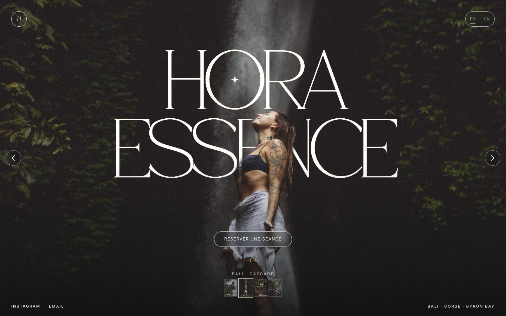

Étude de cas · Développement front-end
Hora Essence
Un site photo bilingue dont le carrousel plein écran ouvre la visite.

Une photo à la fois
J’ai développé le carrousel d’accueil en React et animé les changements de photo avec GSAP. React suit la photo active pour synchroniser sa légende et la navigation du carrousel.
Pendant la transition, la photo en cours reste visible sous la suivante. GSAP déplace un masque elliptique sur l’image entrante pour la dévoiler progressivement et conserver un cadre plein écran. Quand la préférence de mouvement réduit est activée, le changement de photo est immédiat.